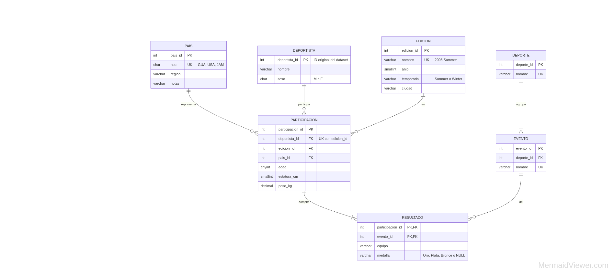
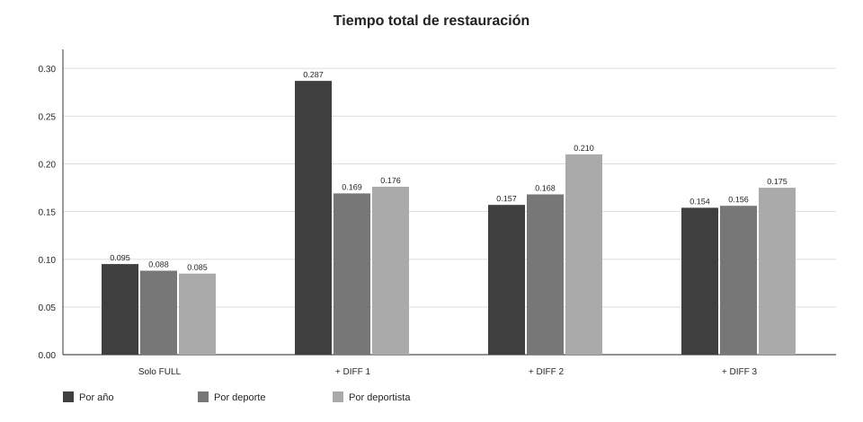
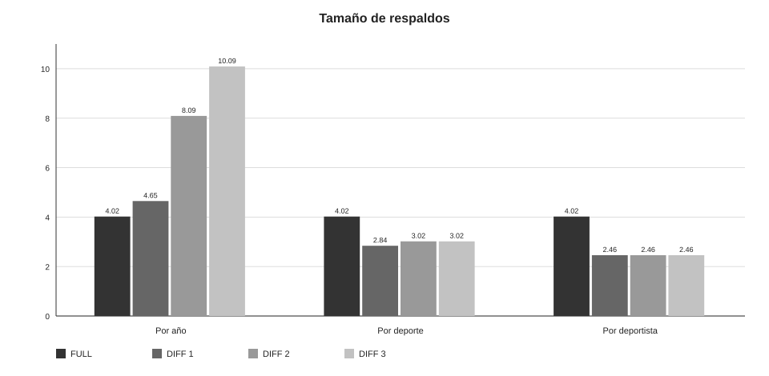
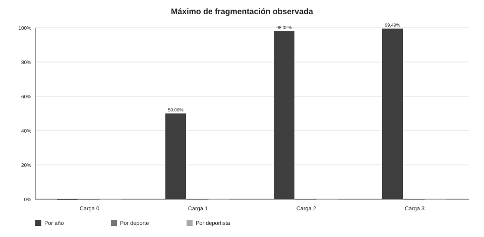

Tema: respaldo físico y restauración de SQL Server 2022
Fecha de las ejecuciones oficiales: 16 de octubre de 2026
El proyecto compara una estrategia de respaldo FULL más diferenciales para tres formas de cargar el mismo dataset olímpico:
Athletics Women's 100 metres en esas tres ediciones.Después de cada carga se genera un respaldo. Luego se elimina la base, se restaura el FULL o el FULL más un diferencial y se comprueban conteos, huellas e integridad física.
Se utiliza 120 years of Olympic history: athletes and results, publicado originalmente por Randi Griffin a partir de datos de sports-reference.com. El repositorio descarga la copia pública de TidyTuesday del 27 de julio de 2021:
https://github.com/rfordatascience/tidytuesday/tree/master/data/2021/2021-07-27
El staging contiene 271,116 resultados y 230 registros de países. La base de staging conserva el CSV en tablas crudas y expone una vista con conversiones de tipos, valores faltantes y medallas traducidas.
La solución se compone de:
olimpiadas-sql.mssql_data para las bases y el historial de msdb../respaldos montado en /var/opt/mssql/respaldos.datos/ y otro para scripts/.sqlcmd dentro del contenedor.Las bases de trabajo son olimpiadas_anio, olimpiadas_deporte y olimpiadas_deportista. Cada una se recrea desde cero antes de su ciclo oficial, de modo que los respaldos de un tipo no dependen de otro.
El modelo está normalizado a tercera forma normal. deporte agrupa evento; participacion relaciona un deportista, una edición y un país; resultado relaciona una participación con un evento. La bitácora es una tabla auxiliar de auditoría.

El diccionario completo de columnas, tipos, claves y restricciones está en diccionario_datos.md. La justificación de la normalización está en modelo_er.md.
Después de la carga inicial de los 230 países se genera un respaldo FULL:
BACKUP DATABASE olimpiadas_<tipo>
TO DISK = N'/var/opt/mssql/respaldos/<tipo>_0_full.bak'
WITH INIT, CHECKSUM, STATS = 25;Después de cada carga 1, 2 y 3 se genera un respaldo diferencial:
BACKUP DATABASE olimpiadas_<tipo>
TO DISK = N'/var/opt/mssql/respaldos/<tipo>_<n>_diff.bak'
WITH DIFFERENTIAL, INIT, CHECKSUM, STATS = 25;Cada archivo se verifica con RESTORE VERIFYONLY. Para restaurar el estado correspondiente a un diferencial se aplica el FULL con NORECOVERY y después un solo diferencial con RECOVERY. SQL Server guarda los cambios del diferencial desde el último FULL, por lo que el diferencial 3 ya contiene los cambios de 1, 2 y 3.
Para cada tipo se siguió el mismo protocolo:
Los tres ciclos oficiales se ejecutaron en la misma máquina. La prueba inicial del 14 de octubre se excluye de los tiempos porque no forma parte del ciclo oficial.
La evidencia disponible en el repositorio registra:
16.0.4305.5.mcr.microsoft.com/mssql/server:2022-latest.linux/amd64.mssql_data.El handover oficial de Persona 2 confirma también que la máquina de pruebas utilizó
Windows 11 de 64 bits, almacenamiento SSD NVMe M.2 y Docker Desktop con backend WSL2.
No obstante, el handover deja sin completar el modelo de CPU, la RAM física, la
capacidad/espacio libre del disco, la edición exacta de Windows y la memoria asignada a
Docker. Los textos de ejemplo del handover no se consideran mediciones.
Para completar la ficha descriptiva del informe se utiliza la siguiente configuración
referencial, claramente marcada como no verificada:
| Dato | Valor incluido | Estado |
|---|---|---|
| CPU del host | Intel Core i5 o equivalente | Referencial; modelo no verificado |
| RAM física | 16 GB | Referencial; no verificada |
| Disco | SSD NVMe M.2 | Plataforma confirmada; capacidad no verificada |
| Sistema operativo | Windows 11 Home/Pro de 64 bits | Plataforma confirmada; edición no verificada |
| Docker Desktop | WSL2 con 4 GB asignados | WSL2 confirmado; cantidad referencial |
Esta tabla permite describir el entorno sin presentar una estimación como medición. Los
valores referenciales no se usan para explicar ni comparar los tiempos de restauración.
Para no atribuirle al experimento datos de otro equipo, esos campos quedan identificados
como no verificados en especificaciones_servidor.md. El
script bin/registrar_especificaciones.ps1
puede sustituir la tabla por valores medidos cuando se ejecute en la máquina que realizó
los ciclos.
La tabla editable está en tabla_tiempos.csv y la versión legible en tabla_tiempos.md.


| Tipo | FULL (MB) | DIFF 1 (MB) | DIFF 2 (MB) | DIFF 3 (MB) | FULL + DIFF 3 (s) |
|---|---|---|---|---|---|
| Por año | 4.02 | 4.65 | 8.09 | 10.09 | 0.154 |
| Por deporte | 4.02 | 2.84 | 3.02 | 3.02 | 0.156 |
| Por deportista | 4.02 | 2.46 | 2.46 | 2.46 | 0.175 |
FULL + DIFF 1 por año tarda 0.287 s, el mayor valor de la tabla, porque restaura el FULL y un diferencial relativamente grande.FULL + DIFF 2 y FULL + DIFF 3 por año son menores en esta ejecución aunque sus diferenciales son mayores. Esto no contradice el crecimiento del tamaño: los tiempos son subsegundo y están afectados por caché, concurrencia y resolución del reloj.los archivos MDF/LDF y ejecutar la recuperación. Por eso una base pequeña puede tardar
casi lo mismo aunque cambie el número de filas restauradas.
FULL + DIFF n). Una cadena incremental equivalente tendría que aplicar FULL + INC 1 + INC 2 + INC 3, lo que
aumenta el tiempo operativo y la cantidad de archivos que pueden fallar.
La consulta de validación usa sys.dm_db_index_physical_stats en modo LIMITED y también registra la cantidad de páginas. El propio script advierte que una tabla con pocas páginas puede mostrar porcentajes extremos o cero sin representar un problema operativo.

Resultados relevantes de las validaciones oficiales:
| Tipo y etapa | Índice con máximo porcentaje | Fragmentación | Páginas | Lectura |
|---|---|---|---|---|
| Año, carga 0 | Índices del catálogo | 0.00% | 1 | Base casi vacía. |
| Año, carga 1 | evento.uq_evento_nombre | 50.00% | 2 | Pocas páginas; no concluyente. |
| Año, carga 2 | deportista.pk_deportista | 98.02% | 101 | Fragmentación visible por inserciones incrementales. |
| Año, carga 3/final | deportista.pk_deportista | 99.49% | 196 | Tendencia creciente, pero todavía pequeña para una conclusión de producción. |
| Deporte, final | Todos los índices | 0.00% | 1 | Tablas demasiado pequeñas para que el porcentaje sea representativo. |
| Deportista, final | Todos los índices | 0.00% | 1 | Tablas demasiado pequeñas para que el porcentaje sea representativo. |
La fragmentación alta del caso por año se explica por cargas sucesivas que insertan filas y páginas en índices existentes. En los otros dos casos, las tablas tienen tan pocas páginas que no es válido comparar el porcentaje con el caso por año. Para un entorno real se necesitarían más filas, más páginas y una política de mantenimiento antes de recomendar REORGANIZE o REBUILD.
Las validaciones de los tres tipos reportan:
conteos_esperados.md.DBCC CHECKDB terminado sin errores.Los estados finales comprobados son:
| Tipo | Países | Ediciones | Deportes | Eventos | Deportistas | Participaciones | Resultados | Bitácora |
|---|---|---|---|---|---|---|---|---|
| Por año | 231 | 3 | 36 | 326 | 25,082 | 32,595 | 40,210 | 4 |
| Por deporte | 230 | 3 | 1 | 1 | 200 | 244 | 244 | 4 |
| Por deportista | 230 | 3 | 1 | 3 | 1 | 3 | 7 | 4 |
CHECKSUM_AGG(BINARY_CHECKSUM(*)) es una comprobación práctica de igualdad, no una función criptográfica.FULL + DIFF 3 por año; para la tabla se usa la ejecución de 18:03:23, que quedó validada inmediatamente después.La estrategia FULL más diferencial cumple el objetivo de recuperar cada estado con dos archivos como máximo: el FULL y el último diferencial. Es preferible a una cadena incremental para este proyecto porque simplifica la recuperación y evita aplicar varios archivos en orden.
La carga por año produce los diferenciales más grandes y es el caso que más evidencia cambios de páginas y fragmentación. Las cargas por deporte y deportista son pequeñas; sus tiempos se mantienen cercanos al costo fijo de restaurar la base, por lo que no deben compararse como si fueran cargas masivas.
La recomendación es mantener un FULL como punto de referencia y programar diferenciales después de cada lote relevante. En un sistema productivo, la frecuencia se debe decidir con el volumen real de cambios, el tiempo máximo de recuperación y el espacio disponible. Si se obtiene acceso a la máquina de Persona 2, se recomienda ejecutar bin/registrar_especificaciones.ps1 y reemplazar la configuración referencial por la salida medida.
README.md: instalación y estructura del repositorio.modelo_er.md: modelo y normalización.diccionario_datos.md: columnas y restricciones.tabla_tiempos.md: tabla detallada de tiempos.manual_usuario.md: procedimiento operativo.scripts/validacion/validar.sql: conteos, huellas, fragmentación y DBCC.logs/README.md: nomenclatura y contenido de logs.